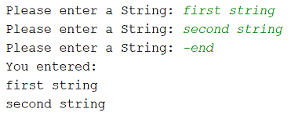
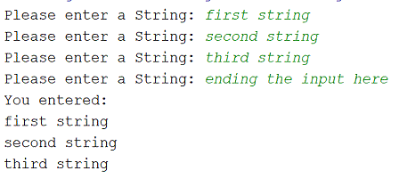

ArrayList · loops
This step introduces a way to write and check your exercises on IntelliJ.
For each exercise, you should write the code in its own method and give it a similiar method header similar to this:
private void simpleWhile()Perform these steps:
In IntelliJ, create a new Project called LoopExercises.
Create a class in this Project called Loops. In this class, add the following code:
import java.util.ArrayList;
import java.util.Scanner;
public class Loops {
ArrayList<String> strings;
Scanner input = new Scanner(System.in);
public static void main(String args[]){
Loops loops = new Loops();
loops.simpleWhile();
}
private void simpleWhile() {
System.out.println("This method will print 1 to 10 to the console:");
int i = 1;
while (i <= 10){
System.out.println(i);
i++;
}
}This method, simpleWhile, will print out 1 to 10 to the console. Note that it is invoked from the main method, just after the constructor.
Note that Scanner and ArrayList objects are there for the exercises in the next step; we are not using them here.
Attempt the following exercises on loops. For each exercise:
Add a method to the Loops class (as was done in the demo step).
use the global Scanner object to read in data from the user, if required.
call your writen method from the main class (and comment out calls to other methods).
Remember, the object of this lab is to give you practice with loops in an ArrayList context. So it is important you utilise loops throughout.
You may need to refer back to your lecture notes during this lab
Write a method to:
Call this method exercise_1 and don't forget to instantiate the ArrayList (we have done it here for you):
private void exercise_1(){
strings = new ArrayList<>();
//code goes here!
}Copy your exercise_1 method and paste it as exercise_2.
Now rewrite:
Now call this new method from the main method. There should be no visible difference from the console perspective; we only changed the internal workings of the code.
In the previous exercises, we took in 6 strings. In this one, we will use a sentinel to stop the input of Strings. This will let the user decide how many Strings they want to enter.
Copy your exercise_1 method and paste it as exercise_3.
Now rewrite:
the reading of the strings to be controlled by a sentinel based while loop where the String "-end" ends the intake of data from the console. Remember to use the .equals() method when testing for equality.
the printing of the strings to use a for each loop.
Your console output should look something like this:

In the previous exercise, we used a sentinel value to end the loop (i.e. "-end"). In this version, we will end the input when the user enters a string that starts with "end". But we will construct it using a flag-based loop rather than a sentinel-based loop. You can copy the exercise_3 method and paste it as exercise_4.
Your console output should look something like this:

The solution to these exercises is here.